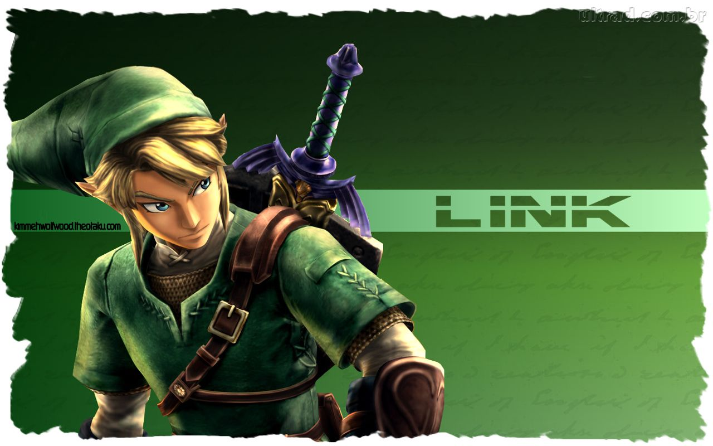
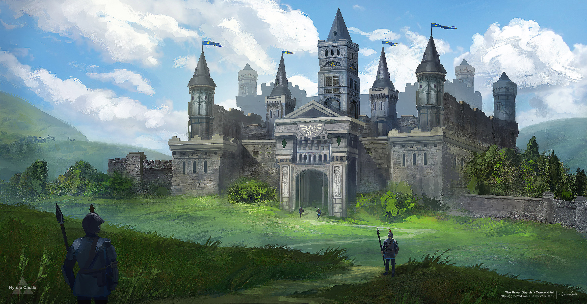
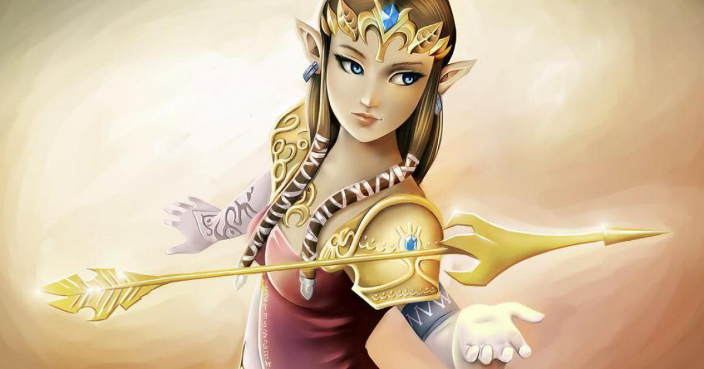

Présentation du monde de Zelda
Article 1: Le personnage de Link

Link est un personnage imaginaire et le principal héros de la série de jeux vidéo The Legend of Zelda de Nintendo. Créé par Shigeru Miyamoto, The Legend of Zelda est un des noyaux durs de Nintendo. En 2007, plus de 47 millions d’exemplaires...
Lire la suite
Article 2: Le Royaume d'Hyrule

Le royaume d’Hyrule est le royaume imaginaire qui sert de cadre à la plupart des opus de la série de jeux vidéo The Legend of Zelda créée par Shigeru Miyamoto et Takashi Tezuka de la société japonaise Nintendo. Le royaume d’Hyrule apparaît...
Lire la suite
Article 3: La Princesse Zelda

La Princesse Zelda est un personnage central de la série The Legend of Zelda. Bien que la série doive son nom à ce personnage, il ne s'agit pas d'un personnage jouable dans la série principale et elle n'est pas non plus le personnage principal. Il y a...
Lire la suite